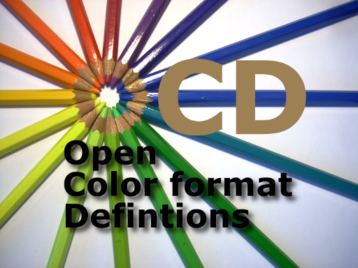

|
 |
OCD is a set of Open Color format Definitions.
Color formats are used in everything from BLTers to video codecs, and from cameras to displays. But although
there are plenty of common formats, the definition of the code specifying them is never the same.
OCD attempts to solve this problem. It provides logical color format codes, and
is extensible.
|
OCD was designed to allow a single 32-bit word (unsigned long) to specify the
color format.
OCD breaks off a chunk of those 32 bits to specify a vendor ID. With
this, OCD can allow vendors with very unique formats to obtain their own vendor
ID and specify any of 16 million formats of their own. Minimum sharing
here, but maximum flexibility.
However, the power of OCD lies in the shared vendor ID. The
OCDFMTDEF_VENDOR_ALL vendor ID indicates that the common set of definitions is
being used. And this set of definitions is designed to specify pretty much
any reasonably common color format in use today.
When OCDFMTDEF_VENDOR_ALL is chosen, the remaining 24 bits of the format are
sub-divided into bitfields used to describe the format.
The first field specifies the color space. Currently there are five
color spaces defined, but there is room for three more if the need arises:
- Monochrome - OCDFMTDEF_CS_MONO
- Look-Up Table - OCDFMTDEF_CS_LUT
- RGB - OCDFMTDEF_CS_RGB
- YCbCr (a.k.a. YUV) -
OCDFMTDEF_CS_YCbCr
- Alpha - OCDFMTDEF_CS_ALPHA
Once the color space has been selected, the remaining bits depend on that
choice.
This field specifies the standard being used for this color space.
Currently, this field is only defined for the YCbCr color space:
- ITU-R BT.601
- ITU-R BT.709
- Full Scale
We believe that this field will be used to add linear format support in the
very near future.
This bit indicates that the format includes an alpha channel along with the
main color components.